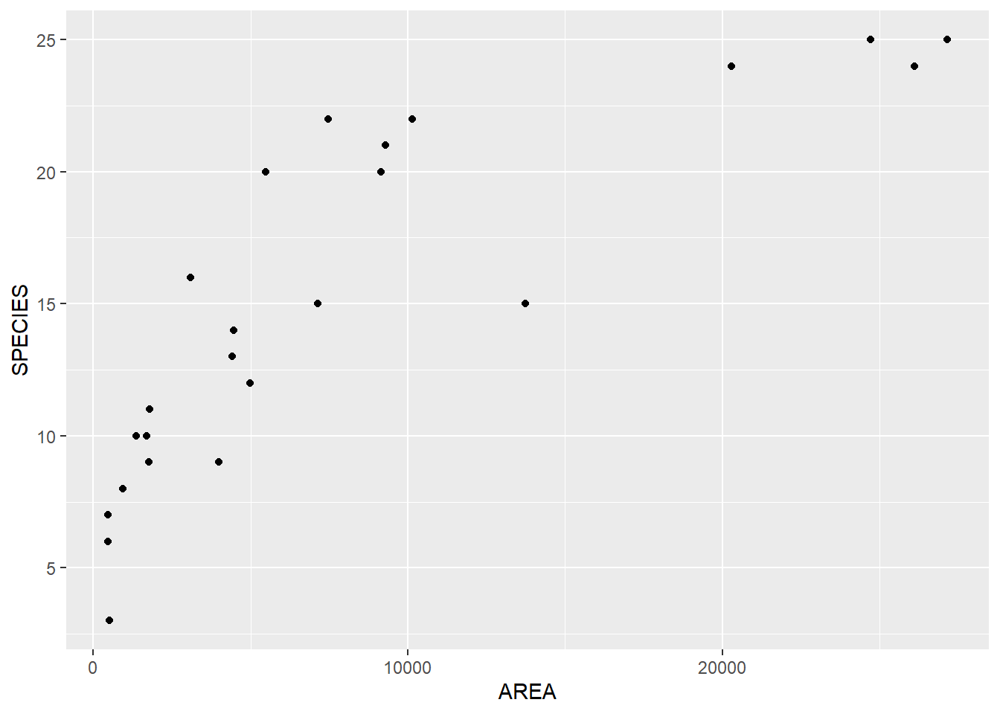
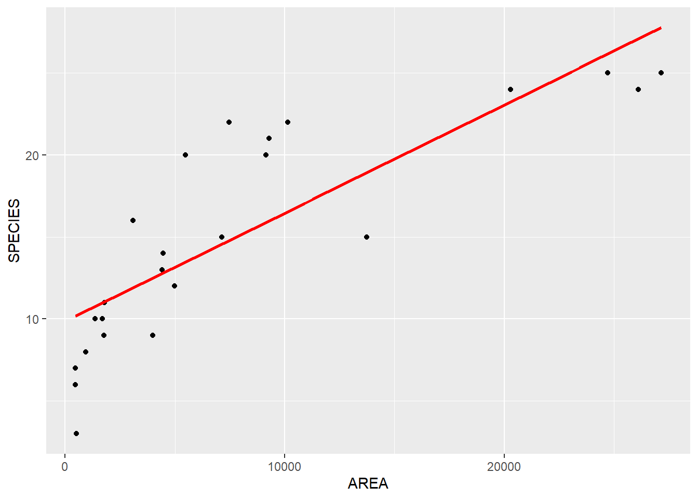
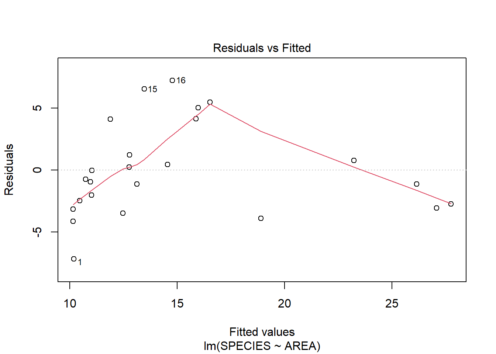
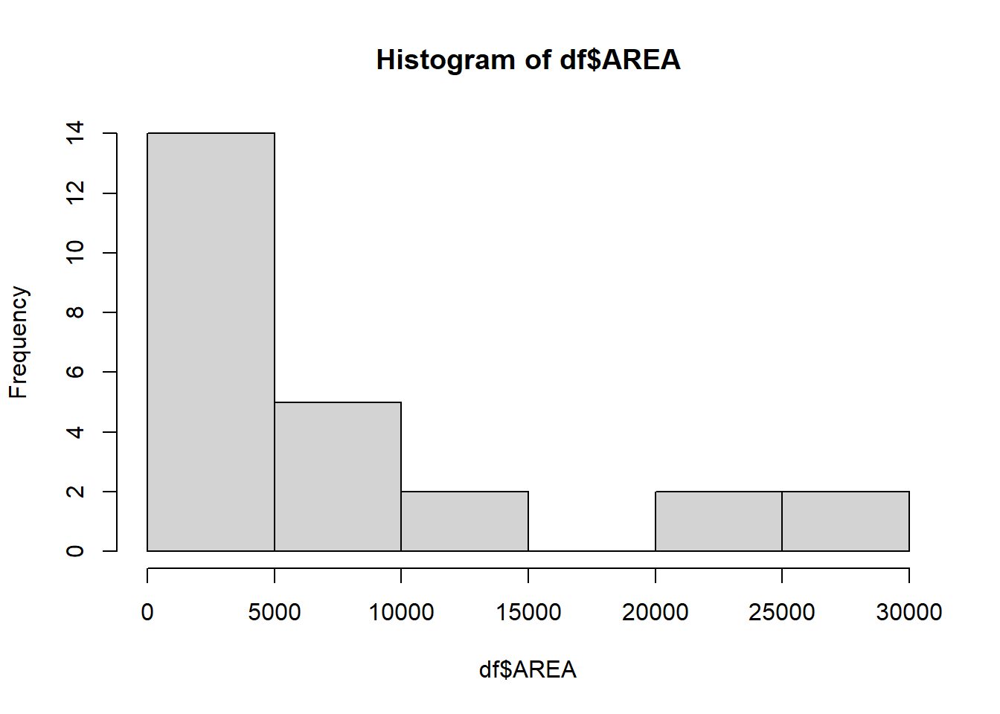
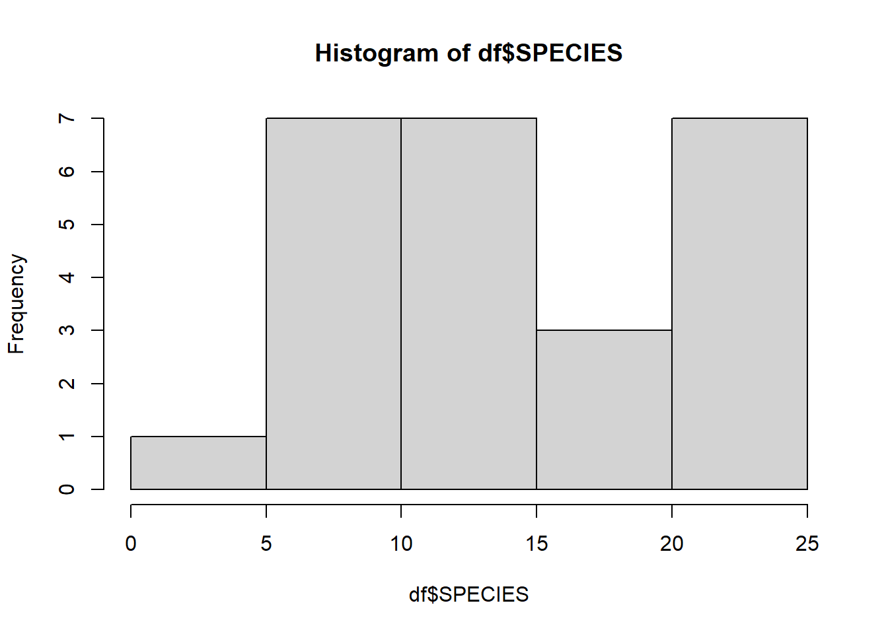
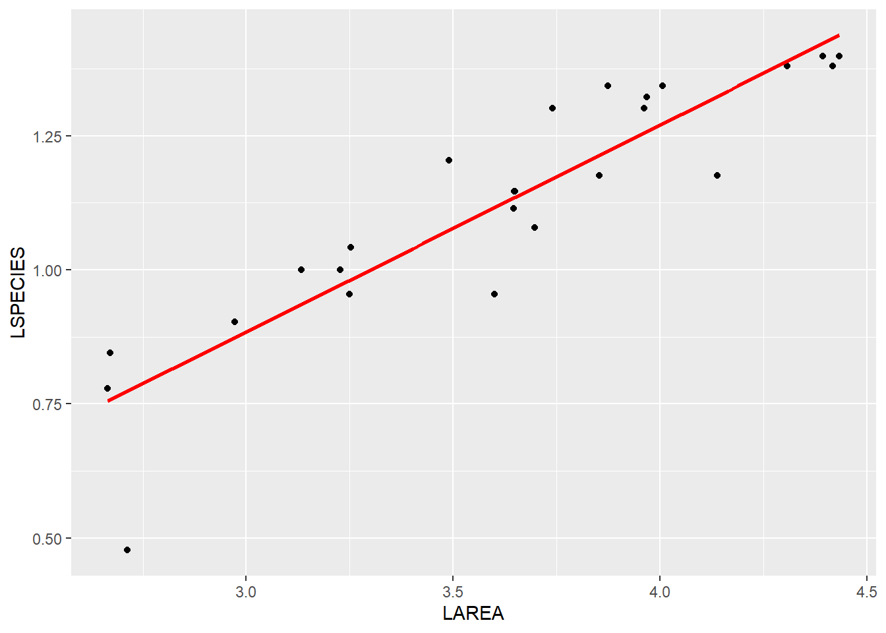
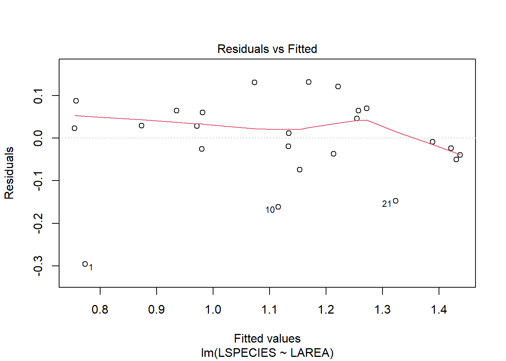
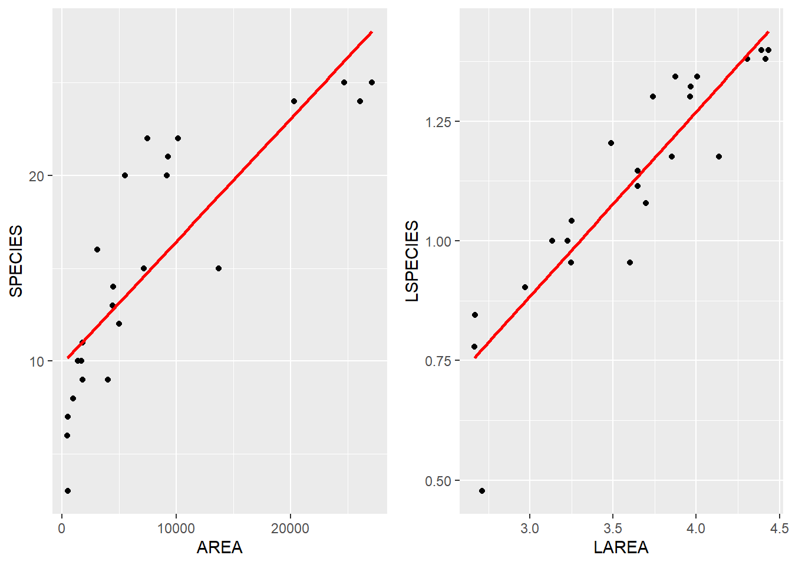
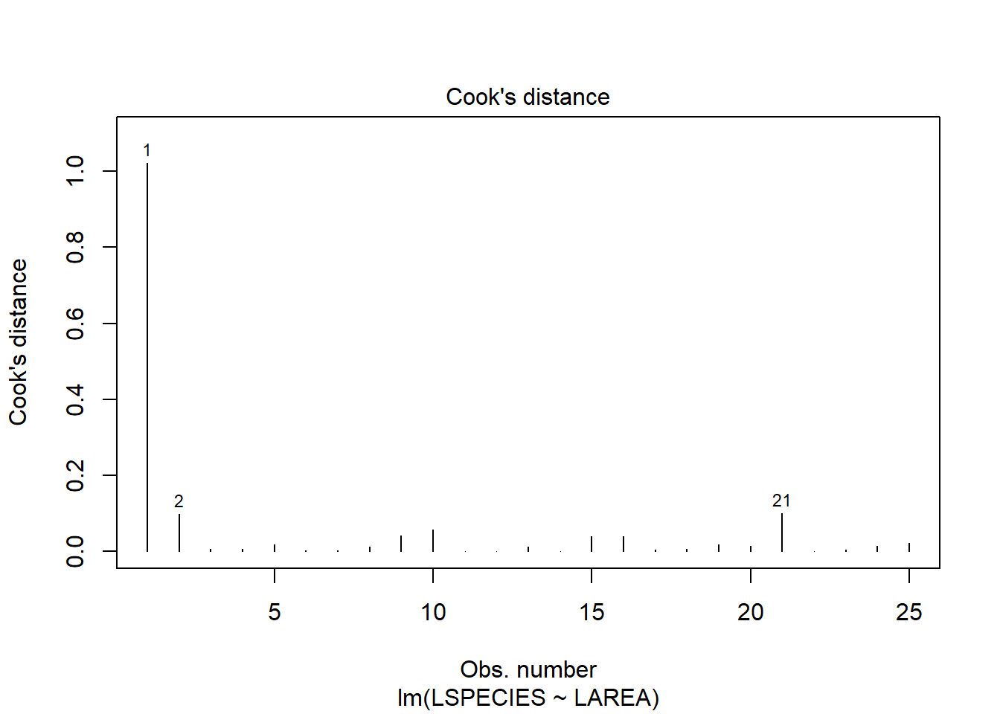

library(ggplot2)Simple Linear Regression (5.1, 5.2)
Example from the book Experimental Design and Data Analysis for Biologists by Gerry P. Quinn and Michael J. Keough
Page 81, Chapter 5 - Correlation and regression.
# get thedata
df <- read.csv("data/peake.csv")DT::datatable(df)A first look at the data
We want to adjust the number of species (Y) based on its area (X).
ggplot(data = df, aes(x = AREA, y = SPECIES)) +
geom_point()
Linear regression
We use the function lm() to adjust the linear regression model. We use the following formula: Y ~ X.
model <- lm(SPECIES ~ AREA, data = df)Main info about the model
summary(model)
Call:
lm(formula = SPECIES ~ AREA, data = df)
Residuals:
Min 1Q Median 3Q Max
-7.1964 -2.7521 -0.7509 1.2094 7.2148
Coefficients:
Estimate Std. Error t value Pr(>|t|)
(Intercept) 9.85616668 1.04396038 9.441 0.00000000224 ***
AREA 0.00065930 0.00009283 7.102 0.00000031024 ***
---
Signif. codes: 0 '***' 0.001 '**' 0.01 '*' 0.05 '.' 0.1 ' ' 1
Residual standard error: 3.759 on 23 degrees of freedom
Multiple R-squared: 0.6868, Adjusted R-squared: 0.6732
F-statistic: 50.44 on 1 and 23 DF, p-value: 0.0000003102
We obtained:
Estimate: The estimated coefficients for each predictor, including the intercept. These show how much the dependent variable changes for a one-unit change in the predictor.
Std. Error: The standard error of the estimated coefficients, indicating the variability in the coefficient estimates.
t-value: The t-statistic for testing whether the coefficient is significantly different from zero. It is calculated as the Estimate divided by the Std. Error.
Pr(>|t|): The p-value corresponding to the t-statistic, which indicates whether the predictor is statistically significant. A small p-value (e.g., < 0.05) suggests the predictor significantly contributes to the model.
Plot of the regression model
plot1 <- ggplot(df, aes(x = AREA, y = SPECIES)) +
geom_point() + # Scatter plot
geom_smooth(method = "lm", se = FALSE, color = "red")
plot1`geom_smooth()` using formula = 'y ~ x'
Residuals vs. fitted data (non transformed data)
plot(model, which = 1)
There shouldn’t be a large variation of the residuals. We will change the scale of the data. Let’s take a look at the data distributions first using histograms.
# histogram of area
hist(df$AREA)
# quantiles of area
summary(df$AREA) Min. 1st Qu. Median Mean 3rd Qu. Max.
462.2 1773.7 4451.7 7802.0 9287.7 27144.0 # histogram of species
hist(df$SPECIES)
# quantiles of species
summary(df$SPECIES) Min. 1st Qu. Median Mean 3rd Qu. Max.
3 10 14 15 21 25 When to apply the log transformation:
When your residuals show non-constant variance (heteroscedasticity) or skewness.
When the relationship between variables seems non-linear but multiplicative.
When your variables contain large ranges of values or outliers that affect the model.
We could have transformed the data into \(log_{10}\) using
log10(df$AREA) [1] 2.712650 2.671228 2.664877 2.972481 3.132628 3.248870 3.226860 3.251952
[9] 3.489968 3.599896 3.645898 3.648524 3.697481 3.648444 3.739631 3.873681
[17] 3.853626 3.961418 4.005741 3.967908 4.137643 4.307513 4.392921 4.433674
[25] 4.416937We already the have the transformed data (\(log_{10}\)) ready on the variable LAREA and LESPECIES.
Model with the transformed data
model_transformed <- lm(LSPECIES ~ LAREA, data = df)Main info about the new model
summary(model_transformed)
Call:
lm(formula = LSPECIES ~ LAREA, data = df)
Residuals:
Min 1Q Median 3Q Max
-0.29609 -0.03734 0.01186 0.06469 0.13158
Coefficients:
Estimate Std. Error t value Pr(>|t|)
(Intercept) -0.27342 0.13846 -1.975 0.0604 .
LAREA 0.38583 0.03777 10.215 0.000000000511 ***
---
Signif. codes: 0 '***' 0.001 '**' 0.01 '*' 0.05 '.' 0.1 ' ' 1
Residual standard error: 0.09921 on 23 degrees of freedom
Multiple R-squared: 0.8194, Adjusted R-squared: 0.8115
F-statistic: 104.4 on 1 and 23 DF, p-value: 0.0000000005107Plot of the regression line
plot2 <- ggplot(df, aes(x = LAREA, y = LSPECIES)) +
geom_point() + # Scatter plot
geom_smooth(method = "lm", se = FALSE, color = "red")
plot2`geom_smooth()` using formula = 'y ~ x'
Residuals vs. fitted data (transformed data)
plot(model_transformed, which = 1)
Comparing the regression lines
gridExtra::grid.arrange(plot1, plot2, ncol=2)`geom_smooth()` using formula = 'y ~ x'
`geom_smooth()` using formula = 'y ~ x'
Comparing the residuals
Let’s check the difference in the residuals with non transformed and transformed data.
# residuals versus fitted of non transformed data
plot(model, which = 1)# residuals versus fitted of transformed data
plot(model_transformed, which = 1)Cook’s Distance
We will analyse now another measure called Cook’s Distance. It is used to help identify influential data points that have a significant impact on the fitted model. It combines information on both leverage (how far the independent variable is from the mean) and residuals (how far the predicted value is from the actual value).
What Cook’s Distance represents:
Influence: It shows how much the estimated regression coefficients (the slope and intercept) would change if a particular data point were removed from the analysis.
A large Cook’s Distance indicates that a point is influential, meaning it has a considerable impact on the regression model, and removing it could lead to a significantly different model.
Interpretation:
A general rule of thumb is that points with a Cook’s Distance greater than 1 may be considered influential.
However, this threshold can vary depending on the dataset and the number of observations. For smaller datasets, a lower threshold might be more appropriate.
We can get the values using the following function
# get the values and add in the dataset
df$cook <- cooks.distance(model_transformed)Let’s see the first 5 variables and the cook’s distance values.
DT::datatable(df[,c(1:5,15)])
What we observed
The first value LAREA = 2.71 and LSPECIES = 0.47 has a Cook’s Distance of 1.022, which is higher than 1, considered influential.
However, deciding whether to delete a point based solely on Cook’s Distance requires careful consideration of the context and the nature of the data. Here’s when and how to evaluate whether to delete a point with a high Cook’s Distance value:
Check for Data Entry Errors: If the data point with high Cook’s Distance is a result of an entry mistake (e.g., a typo or incorrect measurement), you can justify removing or correcting it.
Check for Validity: Ensure the data point is valid and not an outlier due to faulty data collection or recording. If it’s valid, you might consider keeping it, but see if it warrants a different treatment (such as robust regression).
Based on these considerations, we decided not to delete this point.
We can also plot these values.
plot(model_transformed, which = 4)
Creating a new column based on a unity transformation
Now, we will change the air unit from \(cm^2\) to \(dm^2\) and insert in a new column called LDMAREA.
We will apply the following formula:
\(log_{10}\) of (area / 10000)
df$LDMAREA <- log10(df$AREA/10000)New regression with transformed unit of area
model_new_unit <- lm(LSPECIES ~ LDMAREA, data = df)
summary(model_new_unit)
Call:
lm(formula = LSPECIES ~ LDMAREA, data = df)
Residuals:
Min 1Q Median 3Q Max
-0.29609 -0.03734 0.01186 0.06469 0.13158
Coefficients:
Estimate Std. Error t value Pr(>|t|)
(Intercept) 1.26991 0.02431 52.24 < 0.0000000000000002 ***
LDMAREA 0.38583 0.03777 10.21 0.000000000511 ***
---
Signif. codes: 0 '***' 0.001 '**' 0.01 '*' 0.05 '.' 0.1 ' ' 1
Residual standard error: 0.09921 on 23 degrees of freedom
Multiple R-squared: 0.8194, Adjusted R-squared: 0.8115
F-statistic: 104.4 on 1 and 23 DF, p-value: 0.0000000005107
Note
Checking the estimated coefficients, the new regression line can be expressed by
LSPECIES = 1.26 + 0.38*LMDAREA
Analysis of variance of the model
anova(model_new_unit)Analysis of Variance Table
Response: LSPECIES
Df Sum Sq Mean Sq F value Pr(>F)
LDMAREA 1 1.02705 1.02705 104.35 0.0000000005107 ***
Residuals 23 0.22637 0.00984
---
Signif. codes: 0 '***' 0.001 '**' 0.01 '*' 0.05 '.' 0.1 ' ' 1
Note
The variable LDMAREA has 1 degree of freedom (df) and the residuals/errors have 23 degrees of freedom.